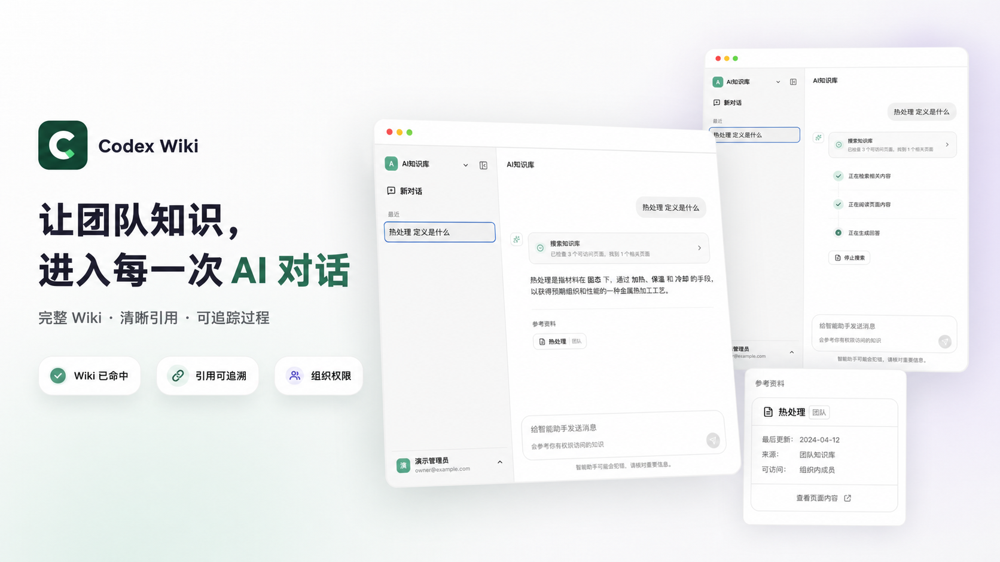
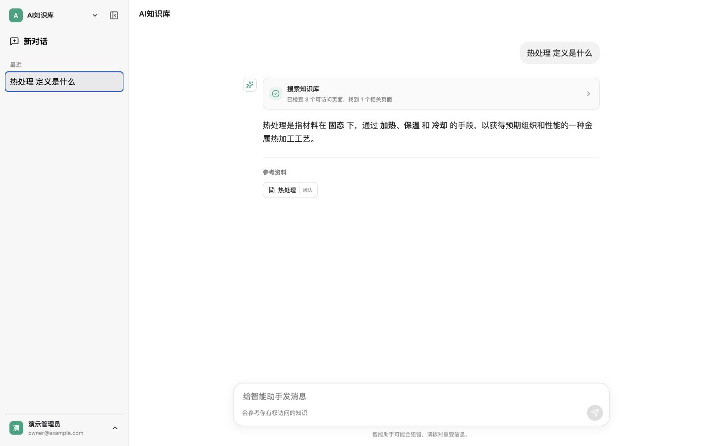

可读的 Wiki，不是黑盒切片
团队和个人知识都以完整 Markdown 页面保存。用户可以阅读、编辑、搜索、追踪版本，也能看见回答引用了哪一页。
搜索知识库已检查 3 个可访问页面，找到 1 个相关页面

多租户组织、Markdown Wiki、DeepSeek 与 Codex app-server，配合 Skill、周期任务和 Crawl4AI，统一收进一个克制、清晰的工作界面。

真实产品界面 · 非概念图
保留 ChatGPT 般克制的交互，同时提供企业真正需要的组织边界、引用证据和执行记录。
团队和个人知识都以完整 Markdown 页面保存。用户可以阅读、编辑、搜索、追踪版本，也能看见回答引用了哪一页。
组织隔离、成员角色、团队知识编辑权和个人 Wiki 策略，都由服务端统一执行。
一句话创建单次或周期任务，由 Crawl4AI 抓取网页并保留每一次 Markdown 结果。
基于 Codex app-server 的持续会话，按组织装载 Skill，并为高风险工具保留审批边界。
按组织、用户和请求记录模型用量、成本、错误与关键行为，同时默认保护密钥和完整提示词。